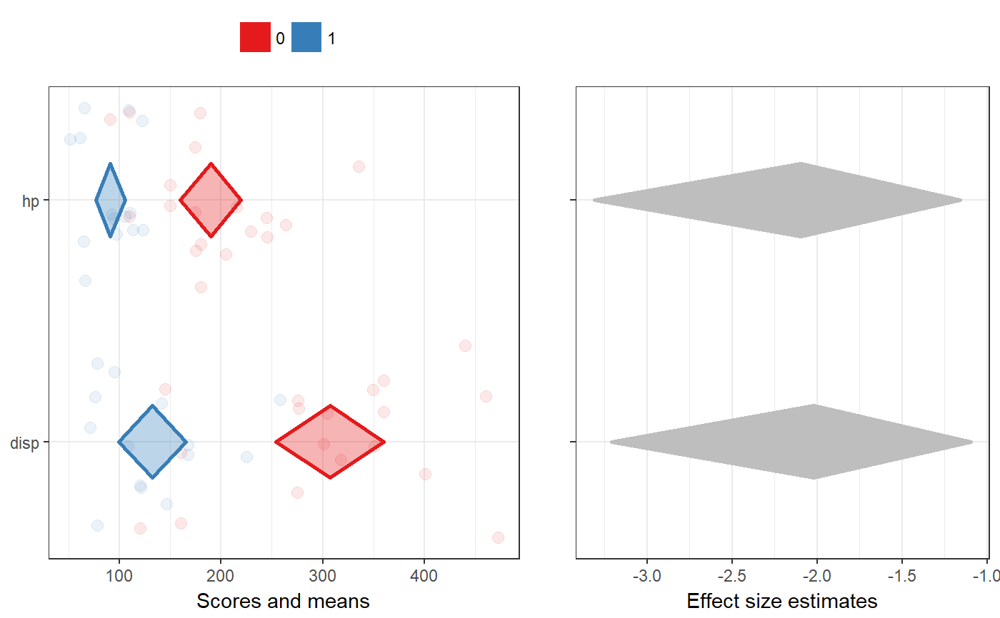

meansComparisonDiamondPlot and duoComparisonDiamondPlot
These are two diamond plot functions to conveniently make diamond plots to compare subgroups or different samples. They are both based on a univariate diamond plot where colors are used to distinguish the data points and diamonds of each subgroup or sample. The means comparison diamond plot produces only this plot, while the duo comparison diamond plot combines it with a diamond plot visualising the effect sizes of the associations. The latter currently only works for two subgroups or samples, while the simple meansComparisonDiamondPlot also works when comparing more than two sets of datapoints. These functions are explained more in detail in Peters (2017).
meansComparisonDiamondPlot(dat, items = NULL, compareBy = NULL, labels = NULL, compareByLabels = NULL, decreasing = NULL, sortBy = NULL, conf.level = 0.95, showData = TRUE, dataAlpha = 0.1, dataSize = 3, comparisonColors = brewer.pal(8, "Set1"), alpha = 0.33, jitterWidth = 0.5, jitterHeight = 0.4, xlab = "Scores and means", ylab = NULL, theme = theme_bw(), showLegend = TRUE, lineSize = 1, xbreaks = "auto", outputFile = NULL, outputWidth = 10, outputHeight = 10, ggsaveParams = list(units='cm', dpi=300, type="cairo"), ...) duoComparisonDiamondPlot(dat, items = NULL, compareBy = NULL, labels = NULL, compareByLabels = NULL, decreasing = NULL, conf.level = c(0.95, 0.95), showData = TRUE, dataAlpha = 0.1, dataSize = 3, comparisonColors = brewer.pal(8, "Set1"), associationsColor = "grey", alpha = 0.33, jitterWidth = 0.5, jitterHeight = 0.4, xlab = c("Scores and means", "Effect size estimates"), ylab = c(NULL, NULL), theme = theme_bw(), showLegend = TRUE, lineSize = 1, drawPlot = TRUE, xbreaks = "auto", outputFile = NULL, outputWidth = 10, outputHeight = 10, ggsaveParams = list(units='cm', dpi=300, type="cairo"), ...)
Arguments
| dat | The dataframe containing the relevant variables. |
|---|---|
| items | The variables to plot (on the y axis). |
| compareBy | The variable by which to compare (i.e. the variable indicating to which subgroup or sample a row in the dataframe belongs). |
| labels | The labels to use on the y axis; these values will replace the variable names in the dataframe (specified in |
| compareByLabels | The labels to use to replace the value labels of the |
| decreasing | Whether to sort the variables by their mean values ( |
| sortBy | If the variables should be sorted (see |
| conf.level | The confidence level of the confidence intervals specified by the diamonds for the means (for |
| showData | Whether to plot the data points. |
| dataAlpha | The transparency (alpha channel) value for the data points: a value between 0 and 1, where 0 denotes complete transparency and 1 denotes complete opacity. |
| dataSize | The size of the data points. |
| comparisonColors | The colors to use for the different subgroups or samples. This should be a vector of valid colors with at least as many elements as sets of data points that should be plotted. |
| associationsColor | For |
| alpha | The alpha channel (transparency) value for the diamonds: a value between 0 and 1, where 0 denotes complete transparency and 1 denotes complete opacity. |
| jitterWidth, jitterHeight | How much noise to add to the data points (to prevent overplotting) in the horizontal (x axis) and vertical (y axis) directions. |
| xlab, ylab | The label to use for the x and y axes (for |
| theme | The theme to use for the plots. |
| showLegend | Whether to show the legend (which color represents which subgroup/sample). |
| lineSize | The thickness of the lines (the diamonds' strokes). |
| drawPlot | Whether to draw the plot, or only (invisibly) return it. |
| xbreaks | Where the breaks (major grid lines, ticks, and labels) on the x axis should be. |
| outputFile | A file to which to save the plot. |
| outputWidth, outputHeight | Width and height of saved plot (specified in centimeters by default, see |
| ggsaveParams | Parameters to pass to ggsave when saving the plot. |
| … | Any additional arguments are passed to |
Details
These functions are explained in Peters (2017).
Value
Diamond plots: a ggplot by meansComparisonDiamondPlot, and a gtable by duoComparisonDiamondPlot.
References
Peters, G.-J. Y. (2017). Diamond Plots: a tutorial to introduce a visualisation tool that facilitates interpretation and comparison of multiple sample estimates while respecting their inaccuracy. PsyArXiv. https://doi.org/10.17605/OSF.IO/9W8YV
See also
Examples
meansComparisonDiamondPlot(mtcars, items=c('disp', 'hp'), compareBy='vs', xbreaks=c(100,200, 300, 400));meansComparisonDiamondPlot(chickwts, items='weight', compareBy='feed', xbreaks=c(100,200,300,400), showData=FALSE);duoComparisonDiamondPlot(mtcars, items=c('disp', 'hp'), compareBy='vs', xbreaks=c(100,200, 300, 400));